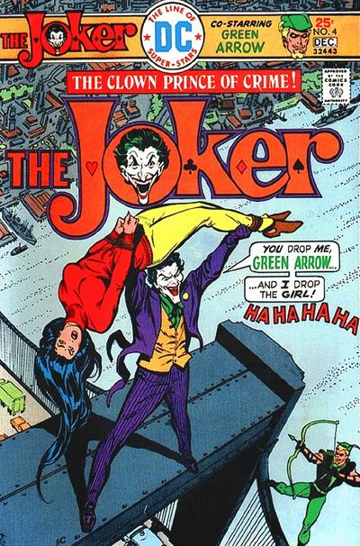

Jokermania

Četvrto izdanje
Zelena strela, jedan od junaka grada Gotham juri Jokera kako bi spasao svoju ljubav, Dinah Lance. Na njegovu nesreću i Joker je zaljubljen u nju, tako da ju je kidnapovao i zapretio da odluči hoće li se udati za njega ili će je ubiti, na njoj je odluka.
